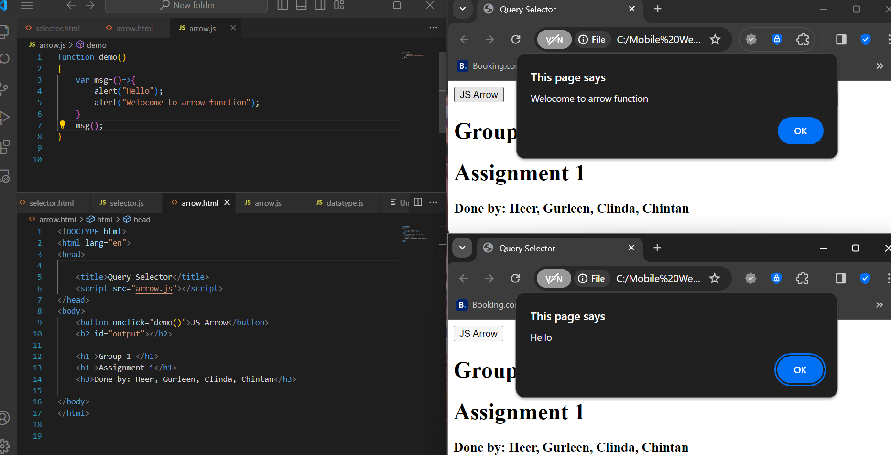

Introduction
Arrow functions in JavaScript are precious way to write anonymous funcitons in JavaScript. They provide with shorthand syntax as compared to traditional function expressions.
Advantages
Advantages of Arrow Functions in Javascript are:
- Arrow function in JavaScript offers cleaner syntax which can implicitly return single expressions.
- Arrow functions in JavaScript offers shorter function declarations.
Disadvantages
- Arrow functions in JavaScript lacks their own 'this', which makes them unsuitable for methods or constructors
- Arrow fuunctions in JavaScript cannot be used as generators and may be less readable in complex functions
Usages
- Arrow functions are most commonly used in Array methods like 'map', 'reduce' as well as in callbacks and event handlers
Program Examples

- As you can see in the above code in line 4 this is basic syntax for performing ArrowFunctions in JavaScript.
- This is basic arrow function which prints the values of fruits array since arrow functions are most commonly used with arrays.